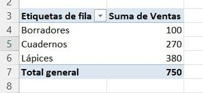
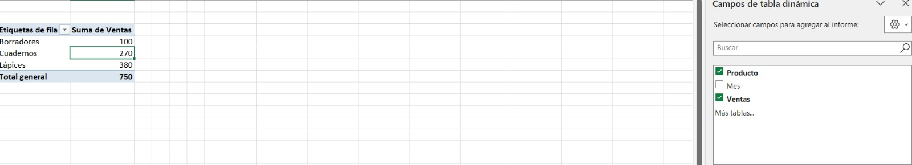
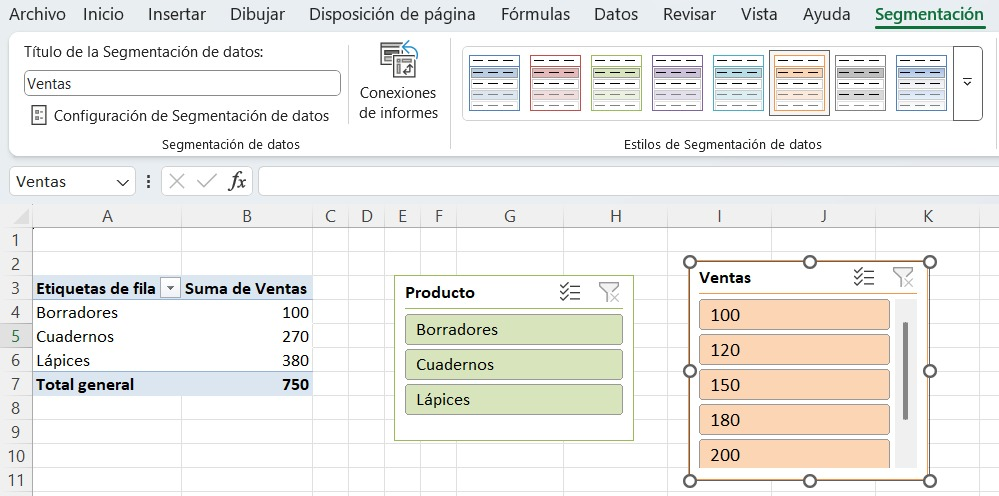
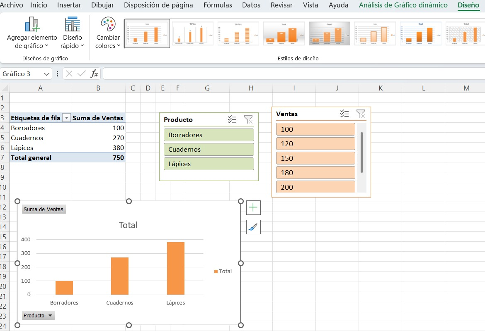

Este blog esta dedicado a la creacion, gestion y formatos de graficos dinamicos, ofreciendo recursos multimedia, ejemplos practicos y aplicaciones utiles. Nuestra mision es facilitar la comprension visual e interactiva de datos complejos.
Los graficos dinamicos en excel son herramientas visuales que permiten analizar datos de forma interactiva, a diferencia de los graficos comunes, los graficos dinamicos permiten filtrar y reorganizar la informacion con facilidad, lo que ayuda a observar tendencias y tomar decisiones de manera más rápida.
Un grafico dinamico es una presentacion visual basada en una tabala dinamica. Este tipo de grafico permite modificar la informacion mostrada mediante filtros, segmentadores y campos, sin necesidad de rehacer los graficos desde cero.
-Permite analizar datos rapidamente.
-Facilita la comparacion entre categorias.
-Es facil de actualizar cuando cambian los datos.
-Mejora la visualizacion de resultados.
Selecciona tus datos (incluye los encabezados de columna).
Ve a la pestaña “Insertar".
Haz clic en “Tabla dinámica” y crea una nueva hoja (o usa una existente).
En el panel derecho, arrastra los campos a las áreas de Filas, Columnas, Valores y Filtros según lo que quieras analizar.
Cuando la tabla dinámica esté lista, ve a “Insertar” → “Gráfico dinámico”.
Elige el tipo de gráfico (columnas, barras, pastel, etc.) y dale formato.
-Primero convertiremos nuestros valores en excel en una tabla. Para ello, seleccionamos todo con el atajo CTRL + E.
-Seleccionamos nuestra tabla y nos vamos a INSERTAR - TABLA DINAMICA y colocamos nuestros valores a FILAS - COLUMNAS - VALORES.
-Despues procederemos a segmentar nuestros valores, para una rapida comprension de ellos mismos.
-Finalmente, procederemos a elegir nuestro grafico dinamico segun nuestra preferencia. Algunos graficos muy comunes pueden ser el de barras, circular, lineal, etc.
Los graficos dinamicos en excel son herramientas muy utiles para analizar informacion de forma clara y flexible. Gracias a su capacidad para filtrar y reorganizar datos, permiten comprender tendencias y tomar mejores decisiones. Ademas, su creacion es sencilla y pueden aplicarse en diferentes contextos como ventas, asistencia o inventarios.
Gracias por quedarte hasta el final de nuestro blog